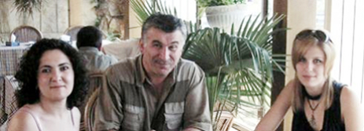

Авторы доклада и Тимур Цховребов в Ереване
СТАНОВЛЕНИЕ НПО АБХАЗИИ: ДОСТИЖЕНИЯ, ПРОБЛЕМЫ, ПЕРСПЕКТИВЫ
Доклад Анаид Гогорян, и Асиды Адлейба, представленный
на обсуждение на шестисторонней
рабочей встрече граждан
и НПО Южного Кавказа (июль 9, 2006).
Краткое содержание:
1. История развития НПО Абхазии.
2. Сложный этап во взаимоотношениях НПО и власти в период 2000-2004 года, в условиях существования в стране авторитарной системы власти.
3. Сложности во взаимоотношениях с донорами абхазских НПО (Международные организации). Разный угол зрения на постановку проблем и стратегические задачи.
4. Активное участие НПО в организации и проведении демократических выборов в Абхазии в 2004 - 2005 году.
5. Движение НПО во власть. Избрание депутатом парламента влиятельного представителя абхазских НПО.
* * *
В конце 80-х годов в Абхазии стали появляться общественные организации (правозащитные, экологические, политические), национально-освободительные движения, культурно-благотворительные общества. Одна из них - Молодежное Творческое Объединение, созданное в 1986 г. по инициативе представителей научной и творческой молодежи. Цель организации – способствовать возрождению национальной культуры, восстановлению исторических памятников, установлению связей с абхазской зарубежной диаспорой, восстановлению памятных для народа исторических дат. В условиях межэтнической напряженности был создан форум "Аидгылара".
Общественные организации нового типа создаются после грузино-абхазской войны, которая повлияла на выбор приоритетов деятельности организаций. Это социальная и психологическая реабилитацией жертв войны, экс-комбатантов, права человека, поддержка уязвимых групп населения. Также - развитие творческих способностей детей и юношества, активизация женского участия в общественной жизни, развитие малого бизнеса, конфликтология, поддержка независимой прессы, защита окружающей среды. Сотрудники общественных организаций занимаются издательской деятельностью. Общественные организации способствуют развитию гражданского общества, включаются в процесс народной дипломатии. Так, представители третьего сектора добились того, что с 1996 года на неправительственном уровне Абхазия представлена на форумах именно как Абхазия, а не часть Грузии.
Общественные организации стремятся на своем уровне способствовать установлению мира и стабильности на Кавказе. Представители НПО мобильно реагируют на нарушения прав журналистов в Карачаево-Черкесии, в Дагестане, Азербайджане.
Оказывали гуманитарную помощь беженцам в Ингушетии. Состоялось несколько встреч в рамках Шляйнингского процесса, где официальные лица встречаются на неофициальном уровне. Инициаторами Кавказского Форум НПО были представители Абхазии, в частности, координатор ЦГП Батал Кобахия. А руководитель правления "Ассоциации женщин Абхазии" Нателла Акаба была инициатором создания Лиги женщин Кавказа.
Неурегулированность государственно-правовых отношений между Грузией и Абхазией, экономическая изоляция, вызванная решением Саммита глав государств СНГ об экономических санкциях (январь 1996 г.), политическое давление со стороны международных организаций, посредников и наблюдателей на переговорах, угрозы применения силы, - это фон, на котором происходит становление и развитие государства и гражданского общества в Абхазии.
Хотя восторгов в связи с нарождением гражданского общества в Абхазии нет. Существует недоверие госструктур к неправительственным организациям и их международным донорам. Прежние власти придерживались мнения о том, что демократические ценности, как продукт иной культуры чужды абхазскому менталитету. Основы гражданского общества в Абхазии были заложены в древности, например, народные сходы. Финансовая поддержка проектов и программ общественных организаций, осуществляется за счет грантов, предоставляемых различными фондами, в основном иностранными.
Международные доноры редко финансируют внутренние проекты абхазских НПО, но при этом готовы поддержать практически любые совместные или параллельные с Грузией проекты. Многие законы, принимаемые государством, часто становятся предметом обсуждения общественности, что власти не всегда поощряют. Это касается принятия конституции, законов о выборах президента, депутатов парламента, органов местного самоуправления, законопроекта о СМИ. Существует необходимость совершенствования механизма государственного управления, строгое соблюдение принципа разделения властей. Но постепенно начинается процесс построения мер доверия между государственными структурами и гражданским обществом в Абхазии. Есть понимание того, что ни государство, ни бизнес, ни общественность не могут самостоятельно обеспечить гражданам равные возможности для достойной жизни.
Гражданское общество за последние годы окрепло, больше участвует в политических процессах. Подтверждение этому - последние президентские выборы, когда, несмотря на накал политических страстей, удавалось сохранить ситуацию в правовом поле. Гражданское общество и власть достойно вышли из внутриполитического кризиса. Первый опыт мониторинга и наблюдения за выборами удался у Лиги избирателей "За честные выборы". Она была создана на базе сухумского Клуба неправительственных организаций. Причем, у членов Лиги не было статуса наблюдателей.
Постепенно некоторые общественные организации создают сеть своих филиалов. В настоящее время в Абхазии около сотни гражданских организаций, в основном они расположены в Сухуме. Лидеры различных организаций понимают необходимость консолидации своих действий для установления равноправного диалога с властными структурами, формирования партнерских отношений с местной администрацией, для участия в разработке необходимых законов, обсуждении решений, способствующих преодолению сложных социальных проблем в республике.
В октябре 2005г. состоялась вторая выставка НПО и презентация первого справочника НКО. В справочник вошла информация о 71 местной и 14 международных организациях (миссиях), осуществляющих свою гуманитарную деятельность на территории Абхазии и имеющих в Абхазии свои офисы. Помощью женщинам занимается 11% от общего количества организаций, работой с детьми и молодёжью 46% организаций, 19% - оказанием бесплатных услуг людям с инвалидностью, 29% занимаются различного рода благотворительностью (раздачей одежды и медикаментов, помощью престарелым на дому и т.д.), постоянно или периодически исследовательской деятельностью в разных областях и публикациями занимается 13% от общего количества, поддержкой культуры в виде организации выставок и других культурных мероприятий - 21% организаций, оказанием правовых услуг 6%, помощью в становлении малого бизнеса 3% и больше половины из всех организаций - 54% занимаются образовательно-просветительской деятельностью. Больше половины всех организаций, 55% расположено в Сухумском районе, а меньше всего 1% в Гульрипшском.
Представитель абхазских НПО Алхас Тхагушев в 2005 г. избран депутатом парламента. В этом же году принят закон "О некоммерческих организациях Республики Абхазия". Статья 2 Закона гласит: "Некоммерческой организацией является организация, не имеющая целью извлечение прибыли в качестве основной цели своей деятельности и не распределяющая полученную прибыль между участниками. Некоммерческие организации могут создаваться для достижения социальных, благотворительных, культурных, образовательных, научных и управленческих целей, в целях охраны здоровья граждан, развития физической культуры и спорта, удовлетворения духовных и иных нематериальных потребностей граждан, защиты прав, законных интересов граждан и организаций, разрешения споров и конфликтов, оказания юридической помощи, а также в иных целях, направленных на достижение общественных благ".
Алхас Тхагушев после грузино-абхазской войны сплотил вокруг себя группу людей, получивших, как и он сам инвалидность после ранений в боях. Была создана общественная организация "Ассоциация инвалидов-спинальников" с целью защиты прав участников войны, поддержки и оказания помощи семьям погибших, детям - сиротам, помощи в трудоустройстве людям с инвалидностью. Этот проект оказался успешным среди абхазских НПО. По словам депутата Алхаса Тхагушева, он шел во власть с целью участвовать в реформе самой власти, системе государственного управления. Добиться того, чтобы власть была более открытая, доступная для граждан. В настоящее время он лоббирует создание Счетной палаты. Это значит, что растет понимание того, на сколько важно контролировать власть. Он считает, что необходима реформа административно-командной системы, оставшейся в наследство от советского времени, вопросы местного самоуправления, когда чиновники принимают решения, ни коим образом не обращая внимания на общественное мнение.
Сегодня общественные организации занимается увеличением гражданского участия населения. Пытаются размыть те границы, которые создает слабое государство. Сотрудники ЦГП пытаются смыть границы между ветеранами войны и не ветеранами. Они против патриотической дискуссии о том, что только кто с оружием в руках защищали, имеют право на принятие решений.
Также исследуют деятельность органов местного самоуправления. Как сделать его более эффективным? Пролоббировать изменения в законодательной сфере. Батал Кобахия считает, что смена власти никак не повлияла на третий сектор. Нет изменений в нынешнем пространстве, которые создали бы благоприятную среду для развития гражданской инициативы. "Наша роль - вести наблюдение и оповещение о нарушениях, делать это в соответствии с законом. Демократические ценности измеряются законами страны. Традиционные ценности не измеряются никакими законами", - говорит Батал Кобахия.
В ближайшее время будет создана Общественная палата при президенте РА. Это еще один из элементов становления гражданского общества. Представители власти и общества смогут совместно обсуждать возникающие проблемы. Лауреат Нобелевской премии по экономике М. Фридман писал: "Общество таково, каким его делаем мы сами. Только от нас зависит создание такого общества, которое охраняет и расширяет свободу человеческой личности, не допускает чрезмерного расширения власти государства и следит за тем, чтобы правительство всегда оставалось слугой народа, а не превращалось в его хозяина". Абхазия строит независимое демократическое государство и достигла заметных успехов в продвижении по пути демократии.
Краткое содержание:
1. История развития НПО Абхазии.
2. Сложный этап во взаимоотношениях НПО и власти в период 2000-2004 года, в условиях существования в стране авторитарной системы власти.
3. Сложности во взаимоотношениях с донорами абхазских НПО (Международные организации). Разный угол зрения на постановку проблем и стратегические задачи.
4. Активное участие НПО в организации и проведении демократических выборов в Абхазии в 2004 - 2005 году.
5. Движение НПО во власть. Избрание депутатом парламента влиятельного представителя абхазских НПО.
* * *
В конце 80-х годов в Абхазии стали появляться общественные организации (правозащитные, экологические, политические), национально-освободительные движения, культурно-благотворительные общества. Одна из них - Молодежное Творческое Объединение, созданное в 1986 г. по инициативе представителей научной и творческой молодежи. Цель организации – способствовать возрождению национальной культуры, восстановлению исторических памятников, установлению связей с абхазской зарубежной диаспорой, восстановлению памятных для народа исторических дат. В условиях межэтнической напряженности был создан форум "Аидгылара".
Общественные организации нового типа создаются после грузино-абхазской войны, которая повлияла на выбор приоритетов деятельности организаций. Это социальная и психологическая реабилитацией жертв войны, экс-комбатантов, права человека, поддержка уязвимых групп населения. Также - развитие творческих способностей детей и юношества, активизация женского участия в общественной жизни, развитие малого бизнеса, конфликтология, поддержка независимой прессы, защита окружающей среды. Сотрудники общественных организаций занимаются издательской деятельностью. Общественные организации способствуют развитию гражданского общества, включаются в процесс народной дипломатии. Так, представители третьего сектора добились того, что с 1996 года на неправительственном уровне Абхазия представлена на форумах именно как Абхазия, а не часть Грузии.
Общественные организации стремятся на своем уровне способствовать установлению мира и стабильности на Кавказе. Представители НПО мобильно реагируют на нарушения прав журналистов в Карачаево-Черкесии, в Дагестане, Азербайджане.
Оказывали гуманитарную помощь беженцам в Ингушетии. Состоялось несколько встреч в рамках Шляйнингского процесса, где официальные лица встречаются на неофициальном уровне. Инициаторами Кавказского Форум НПО были представители Абхазии, в частности, координатор ЦГП Батал Кобахия. А руководитель правления "Ассоциации женщин Абхазии" Нателла Акаба была инициатором создания Лиги женщин Кавказа.
Неурегулированность государственно-правовых отношений между Грузией и Абхазией, экономическая изоляция, вызванная решением Саммита глав государств СНГ об экономических санкциях (январь 1996 г.), политическое давление со стороны международных организаций, посредников и наблюдателей на переговорах, угрозы применения силы, - это фон, на котором происходит становление и развитие государства и гражданского общества в Абхазии.
Хотя восторгов в связи с нарождением гражданского общества в Абхазии нет. Существует недоверие госструктур к неправительственным организациям и их международным донорам. Прежние власти придерживались мнения о том, что демократические ценности, как продукт иной культуры чужды абхазскому менталитету. Основы гражданского общества в Абхазии были заложены в древности, например, народные сходы. Финансовая поддержка проектов и программ общественных организаций, осуществляется за счет грантов, предоставляемых различными фондами, в основном иностранными.
Международные доноры редко финансируют внутренние проекты абхазских НПО, но при этом готовы поддержать практически любые совместные или параллельные с Грузией проекты. Многие законы, принимаемые государством, часто становятся предметом обсуждения общественности, что власти не всегда поощряют. Это касается принятия конституции, законов о выборах президента, депутатов парламента, органов местного самоуправления, законопроекта о СМИ. Существует необходимость совершенствования механизма государственного управления, строгое соблюдение принципа разделения властей. Но постепенно начинается процесс построения мер доверия между государственными структурами и гражданским обществом в Абхазии. Есть понимание того, что ни государство, ни бизнес, ни общественность не могут самостоятельно обеспечить гражданам равные возможности для достойной жизни.
Гражданское общество за последние годы окрепло, больше участвует в политических процессах. Подтверждение этому - последние президентские выборы, когда, несмотря на накал политических страстей, удавалось сохранить ситуацию в правовом поле. Гражданское общество и власть достойно вышли из внутриполитического кризиса. Первый опыт мониторинга и наблюдения за выборами удался у Лиги избирателей "За честные выборы". Она была создана на базе сухумского Клуба неправительственных организаций. Причем, у членов Лиги не было статуса наблюдателей.
Постепенно некоторые общественные организации создают сеть своих филиалов. В настоящее время в Абхазии около сотни гражданских организаций, в основном они расположены в Сухуме. Лидеры различных организаций понимают необходимость консолидации своих действий для установления равноправного диалога с властными структурами, формирования партнерских отношений с местной администрацией, для участия в разработке необходимых законов, обсуждении решений, способствующих преодолению сложных социальных проблем в республике.
В октябре 2005г. состоялась вторая выставка НПО и презентация первого справочника НКО. В справочник вошла информация о 71 местной и 14 международных организациях (миссиях), осуществляющих свою гуманитарную деятельность на территории Абхазии и имеющих в Абхазии свои офисы. Помощью женщинам занимается 11% от общего количества организаций, работой с детьми и молодёжью 46% организаций, 19% - оказанием бесплатных услуг людям с инвалидностью, 29% занимаются различного рода благотворительностью (раздачей одежды и медикаментов, помощью престарелым на дому и т.д.), постоянно или периодически исследовательской деятельностью в разных областях и публикациями занимается 13% от общего количества, поддержкой культуры в виде организации выставок и других культурных мероприятий - 21% организаций, оказанием правовых услуг 6%, помощью в становлении малого бизнеса 3% и больше половины из всех организаций - 54% занимаются образовательно-просветительской деятельностью. Больше половины всех организаций, 55% расположено в Сухумском районе, а меньше всего 1% в Гульрипшском.
Представитель абхазских НПО Алхас Тхагушев в 2005 г. избран депутатом парламента. В этом же году принят закон "О некоммерческих организациях Республики Абхазия". Статья 2 Закона гласит: "Некоммерческой организацией является организация, не имеющая целью извлечение прибыли в качестве основной цели своей деятельности и не распределяющая полученную прибыль между участниками. Некоммерческие организации могут создаваться для достижения социальных, благотворительных, культурных, образовательных, научных и управленческих целей, в целях охраны здоровья граждан, развития физической культуры и спорта, удовлетворения духовных и иных нематериальных потребностей граждан, защиты прав, законных интересов граждан и организаций, разрешения споров и конфликтов, оказания юридической помощи, а также в иных целях, направленных на достижение общественных благ".
Алхас Тхагушев после грузино-абхазской войны сплотил вокруг себя группу людей, получивших, как и он сам инвалидность после ранений в боях. Была создана общественная организация "Ассоциация инвалидов-спинальников" с целью защиты прав участников войны, поддержки и оказания помощи семьям погибших, детям - сиротам, помощи в трудоустройстве людям с инвалидностью. Этот проект оказался успешным среди абхазских НПО. По словам депутата Алхаса Тхагушева, он шел во власть с целью участвовать в реформе самой власти, системе государственного управления. Добиться того, чтобы власть была более открытая, доступная для граждан. В настоящее время он лоббирует создание Счетной палаты. Это значит, что растет понимание того, на сколько важно контролировать власть. Он считает, что необходима реформа административно-командной системы, оставшейся в наследство от советского времени, вопросы местного самоуправления, когда чиновники принимают решения, ни коим образом не обращая внимания на общественное мнение.
Сегодня общественные организации занимается увеличением гражданского участия населения. Пытаются размыть те границы, которые создает слабое государство. Сотрудники ЦГП пытаются смыть границы между ветеранами войны и не ветеранами. Они против патриотической дискуссии о том, что только кто с оружием в руках защищали, имеют право на принятие решений.
Также исследуют деятельность органов местного самоуправления. Как сделать его более эффективным? Пролоббировать изменения в законодательной сфере. Батал Кобахия считает, что смена власти никак не повлияла на третий сектор. Нет изменений в нынешнем пространстве, которые создали бы благоприятную среду для развития гражданской инициативы. "Наша роль - вести наблюдение и оповещение о нарушениях, делать это в соответствии с законом. Демократические ценности измеряются законами страны. Традиционные ценности не измеряются никакими законами", - говорит Батал Кобахия.
В ближайшее время будет создана Общественная палата при президенте РА. Это еще один из элементов становления гражданского общества. Представители власти и общества смогут совместно обсуждать возникающие проблемы. Лауреат Нобелевской премии по экономике М. Фридман писал: "Общество таково, каким его делаем мы сами. Только от нас зависит создание такого общества, которое охраняет и расширяет свободу человеческой личности, не допускает чрезмерного расширения власти государства и следит за тем, чтобы правительство всегда оставалось слугой народа, а не превращалось в его хозяина". Абхазия строит независимое демократическое государство и достигла заметных успехов в продвижении по пути демократии.